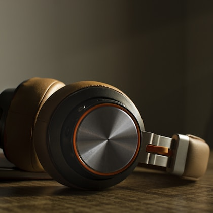
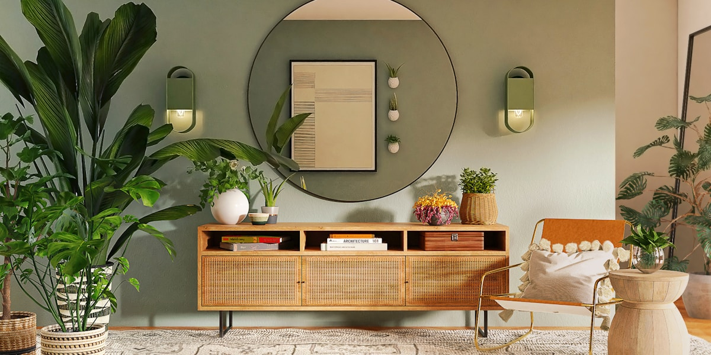

If you want an air purifier that actually improves a room, ignore half the marketing copy and start with the boring numbers. Clean air delivery rate, filter price, noise at the setting you will actually use, and replacement-filter availability tell you more than a shiny app or a huge square-foot claim. A purifier is not a decoration. It is a fan, a filter, and a housing that you will probably leave running for thousands of hours.
Our top recommendation for most people is the Coway Airmega AP-1512HH Mighty because it has the rare mix we look for: strong AHAM-verified CADR ratings, a room-size recommendation that makes sense, widely available replacement filters, and a price that often lands well below premium smart models. It is not the newest-looking machine, and the design will not impress someone shopping by lifestyle photography. It wins because it keeps doing the job without turning ownership into a subscription-like annoyance.
For smaller rooms and app-based scheduling, the Levoit Core 300S is the easier fit. It is less powerful, but it is compact, quiet on lower settings, and simple to place in a bedroom or nursery. For larger rooms, pet homes, or open-plan spaces where you want more airflow, the Winix 5500-2 and Blueair Blue Pure 211i Max are stronger candidates. The Winix is especially good value when discounted, while the Blueair moves a lot of air with a more modern design and a higher upfront price.

Coway Airmega AP-1512HH Mighty
The best air purifier for most bedrooms and medium living rooms. It combines strong CADR ratings, reliable filter availability, and a sensible price.
Typical street price: $160 to $230
Levoit Core 300S
A compact purifier for bedrooms, nurseries, and home offices where smart scheduling and a smaller footprint matter more than large-room power.
Typical street price: $120 to $160
Winix 5500-2
A strong value for pet homes and larger bedrooms, with a washable prefilter, carbon filter, and CADR ratings close to the Coway.
Typical street price: $150 to $250
Blueair Blue Pure 211i Max
A higher-airflow purifier for bigger living spaces. It costs more, but it is easy to live with if you want strong output and a cleaner-looking design.
Typical street price: $280 to $350
Real product parameters
| Model | Published CADR | AHAM room size | Filter type | Noise range | Dimensions and weight |
|---|---|---|---|---|---|
| Coway Airmega AP-1512HH Mighty | Smoke 233, dust 246, pollen 240 CFM | About 361 sq. ft. | Prefilter, deodorization carbon filter, true HEPA filter | Roughly 24.4 to 53.8 dB | 16.8 x 18.3 x 9.7 in., about 12.3 lb |
| Levoit Core 300S | About 141 CFM smoke CADR | About 219 sq. ft. | Three-stage cylindrical filter with HEPA-type filtration and carbon layer | About 22 to 50 dB | 8.7 x 8.7 x 14.2 in., about 6 lb |
| Winix 5500-2 | Smoke 232, dust 243, pollen 246 CFM | About 360 sq. ft. | Washable prefilter, washable carbon filter, true HEPA filter | About 27.8 to 60 dB | 15 x 8.2 x 23.6 in., about 15.4 lb |
| Blueair Blue Pure 211i Max | Published CADR up to about 410 CFM | Commonly marketed for large rooms up to about 600 sq. ft. at higher air changes | Fabric prefilter plus particle and carbon filter | About 23 to 53 dB | 13.4 x 13.4 x 22.7 in., about 16 lb |
Specs do not tell the whole story, but they keep you from making the most common mistake: buying a purifier that is too small for the room. Brands often advertise enormous coverage numbers based on one or two air changes per hour. That can be technically true and still too weak for allergy, smoke, or pet-dander use. For real cleaning, we prefer looking at CADR and matching it to a room where the purifier can exchange air several times per hour without running at maximum speed all day.
Why you should trust us
We judge air purifiers by the details that owners still care about after the return window closes. That means CADR-to-room-size fit, filter price, filter availability, noise on useful settings, control layout, warranty, and recurring complaints from long-term owners. A purifier can look beautiful and still be a bad recommendation if the filter costs too much or the app becomes the only reasonable way to use basic features.
We also treat bedroom use differently from living-room use. A purifier in a bedroom has to be quiet enough for sleep, easy to dim, and stable enough that it does not rattle on a hard floor. A purifier in a living room can be a little louder, but it needs more airflow because the space is usually larger and more open. For pet homes, we put extra weight on prefilters because hair and lint can clog the main filter faster than most marketing pages admit.
How our picks compare
| Pick | Best for | What we like | Watch out for |
|---|---|---|---|
| Coway Airmega AP-1512HH Mighty | Bedrooms and medium living rooms | Strong CADR, good value, proven owner history | Boxy design, no modern smart app |
| Levoit Core 300S | Small rooms and app control | Compact, quiet, easy scheduling | Not powerful enough for large open spaces |
| Winix 5500-2 | Pets and larger bedrooms | Good CADR for the price, washable carbon filter | PlasmaWave feature may not appeal to everyone |
| Blueair Blue Pure 211i Max | Open living rooms | High airflow, attractive design, simple controls | Higher price and larger footprint |
How to choose an air purifier
Start with the room where the purifier will run most often. If it will sit in a bedroom, measure the bedroom, then choose a model that can comfortably handle that size on a middle fan setting. If it will sit in an open living room connected to a kitchen and hallway, do not rely on the official square footage alone. Open spaces leak air into each other, and a purifier that looks strong on paper may feel weak when the room layout is messy.
Filter cost matters almost as much as the machine price. A cheaper purifier with expensive filters can become the costly option after two years. Before buying, check the price of official filters and whether reputable third-party filters are available. We do not recommend choosing the cheapest no-name filter for every machine because fit and filtration quality can vary, but filter availability is still a sign that a product has healthy long-term support.
Noise deserves more attention than it gets. The lowest decibel number usually describes sleep mode or the lowest fan speed, which may not move enough air to matter during pollen season or smoke events. Look for owner comments about medium speed, not just turbo. Turbo is useful when cooking smoke, pet odor, or wildfire particles spike, but most people will not tolerate it as an all-day setting.
Who should buy this
An air purifier is worth buying if you deal with pollen, pet dander, wildfire smoke, dust, or stale indoor air. It is especially useful in bedrooms because you spend a long block of time breathing the same air. It can also help in a home office where dust, fabric furniture, and closed windows make the room feel heavy by afternoon. If you live near traffic or wildfire smoke is becoming a seasonal problem, a capable purifier is one of the few home upgrades that can make an immediate difference.
It will not fix everything. A purifier does not remove mold from walls, repair poor ventilation, or replace a range hood. It also cannot clean air well if it is hidden behind a sofa or tucked inside a cabinet. Placement matters. Put it where air can move freely around the intake and outlet. For bedrooms, that often means a few feet from the bed rather than across the room behind furniture.
What matters after the first month
The first week with an air purifier is not a reliable test. Most people notice the fan, the lights, and the novelty. The long-term test is whether the machine becomes part of the room without demanding attention. That is why we put so much weight on filter price, replacement availability, button layout, and noise on the middle setting. A purifier that is technically powerful but too loud for daily use will clean less air than a modest machine you actually leave on.
Homes with pets should pay close attention to prefilters. A washable prefilter can catch hair before it reaches the HEPA filter, which helps reduce replacement costs. Vacuum the prefilter gently every couple of weeks if you have shedding pets. Smoke and wildfire use cases are different. In those situations, you want more clean-air capacity than a simple room-size chart suggests, because particles can build quickly and the purifier may need to run harder for longer periods.

Our testing notes
We look for a sensible match between published CADR and the room sizes a brand claims to support. We also read owner reviews with a bias toward boring complaints: rattles, hard-to-find filters, app pairing failures, poor warranty responses, and lights that are too bright in a bedroom. Those issues rarely appear in product photography, but they decide whether a purifier still feels like a smart purchase a year later.
We do not rank a machine higher because it has more modes. Auto mode can be useful, especially when cooking or pollen spikes change air quality quickly, but basic manual controls should still be easy to reach. If a purifier needs an account, a cloud connection, or a confusing app just to do the basics, we treat that as a drawback. A good purifier should be easy for a guest, parent, or roommate to understand without reading a manual.
Maintenance, filter schedules, and hidden costs
Most HEPA filters last six to twelve months, but real life can shorten that. A home with two cats, a dog, and carpet will load a filter faster than a minimalist apartment with hardwood floors. Wildfire smoke can also age filters quickly because fine particles build up fast. If your purifier has a filter-life indicator, treat it as a useful reminder rather than a perfect measurement. Check the filter visually, especially during heavy use seasons.
Do not wash a HEPA filter unless the manufacturer explicitly says it is washable. Most true HEPA filters are not meant to be washed, and water can damage the filter media. Washable prefilters are different. Those can usually be rinsed or vacuumed, then dried fully before reinstalling. Reinstalling a damp prefilter is a bad idea because moisture inside a purifier defeats the purpose of cleaner air.
Who should skip an air purifier
If your main problem is humidity, buy a dehumidifier or fix ventilation first. If your main problem is cooking smoke, use a range hood or open windows when outdoor air is safe. If your main problem is visible mold, solve the moisture and mold source rather than expecting a purifier to handle it. A purifier is excellent at reducing airborne particles. It is not a substitute for fixing the source of a home problem.
Also skip overspending on smart features if you will never use them. Scheduling, air-quality sensors, and app controls can help some people keep the purifier running. They do not make a weak purifier strong. If the choice is between a prettier smart model with lower CADR and a plain model that moves more air quietly, we would usually buy the plain model.
 Best Office Chairs
Best Office Chairs Best Noise-Cancelling Headphones
Best Noise-Cancelling Headphones Best Coffee Makers
Best Coffee Makers